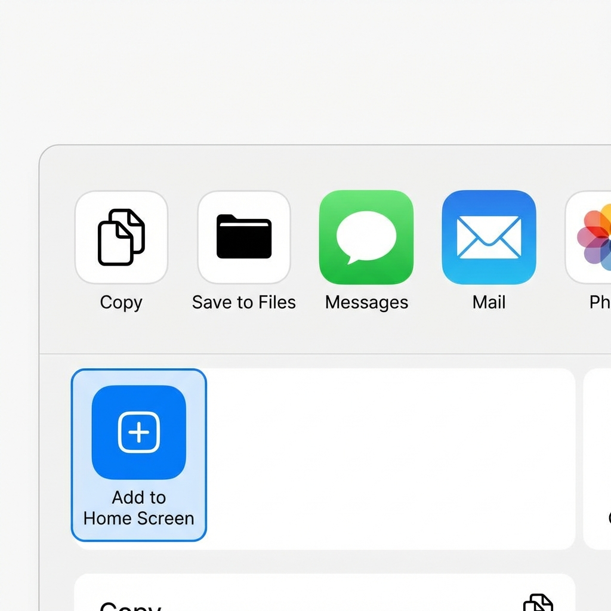

Creating a New Setlist
Organize your repertoire by creating custom setlists. Click the "+" button in the setlist section to create a new list, give it a name, and start adding your favorite songs for easy access during practice or performance.

Master the features of Pop Song Chord Book
Clicking on any song brings you to the detail view. Here you can see the lyrics, chords, and playback controls. The interface is designed to be clean and easy to read while you play.
Feel free to make your own descriptions like : Intro, Verse, Chorus, Pre-Chorus or even some lyrics cue tips as you see fit. Whatever helps you to understand the structure of the song.
Organize your repertoire by creating custom setlists. Click the "+" button in the setlist section to create a new list, give it a name, and start adding your favorite songs for easy access during practice or performance.
Need help with a chord voicing? Switch to the Piano view to see exactly which keys to press. The diagrams light up to show you the precise fingering for each chord in the song.
Want to customize a song? Open the editor to modify chords. You can choose from diatonic chords valid for the key or borrow chords to spice up the progression.
Practice your scales! Looking for songs in a specific key? Use the filter menu to select a key (e.g., C Major). The song list will update to show only songs that match your criteria.

Need to change the key to suit your voice? Use the transpose controls (+ / -) on the detail page. All chords in the song will instantly update to the new key.
Need to see the words while you play? Tap the microphone icon in the footer to open the lyrics overlay. The lyrics will automatically scroll from bottom to top so you can keep your hands on your instrument.
Master your repertoire with Practice Mode. This feature helps you focus on songs that need more attention by tracking your practice sessions and prioritizing songs you've played the least.
The Chord Timeline is an advanced feature that allows you to see chords move across a playhead in real-time. This is perfect for complex songs where you need to see the exact timing of every chord change.
To ensure the parser identifies your chords perfectly:
Pro Tip: By providing a quantized, 3-note-minimum MIDI file on Channel 1, you'll get perfect results every time!
Below is a short example of how a JSON file for the Chord Timeline feature should be structured:
{
"name": "Advice for the Young at Heart",
"tempo": 122,
"duration": 534.59,
"chords": [
{"name": "Fmaj7", "time": 0.00},
{"name": "Em7", "time": 7.87},
{"name": "Em7", "time": 527.29}
]
}
For the best experience, you can install this website as an app on your phone. This gives you a full-screen view (removing the browser address bar) and makes the chord charts even easier to read.
1. Tap the Share button  at the
bottom of the screen.
2. Scroll down and tap "Add to Home Screen".
3. Tap Add to confirm.
1. Tap the Menu (three dots ⋮) in the top right corner.
2. Tap "Add to Home screen" or "Install App".
3. Follow the prompts to install.